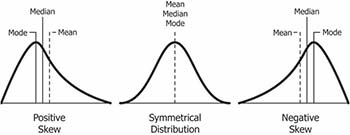

Problemas comunes en ANOVA
Valores atípicos, normalidad y homogeneidad de varianzas
En esta lección, veremos qué hacer cuando violamos los supuestos de normalidad y homogeneidad de varianzas en un ANOVA. En estos casos, es posible que necesitemos realizar correcciones para garantizar que los resultados sean válidos. También veremos cómo manejar valores atípicos en nuestros datos.
En caso que los supuestos de normalidad no se cumplan, puedes utilizar pruebas no paramétricas como el test de Kruskal-Wallis (que es similar al ANOVA de una vía). Sin embargo, no existen alternativas no-paramétricas para el ANOVA de dos vías ni para el ANOVA de tres vías.
Librerías
ANOVA de una vía
En este ejemplo, utilizaremos el conjunto de datos PlantGrowth para realizar un ANOVA de una vía. Este conjunto de datos contiene los datos de un experimento en el que se midió el peso de plantas bajo tres condiciones diferentes: control, tratamiento 1 y tratamiento 2.
Reordenar niveles de un factor
- Usando la función
levels(), podemos ver los niveles del factorgroupen el conjunto de datosPlantGrowth.
- En caso que los niveles no estén en el orden deseado, podemos reordenarlos utilizando la función
reorder_levels()del paqueterstatixde la siguiente manera. Esto es útil para asegurarnos de que los niveles de un factor se muestren en el orden correcto en los gráficos y análisis. Normalmente, quieres mostrar primero el grupo de control y luego los grupos de tratamiento.
Pregunta de investigación
- La pregunta de investigación es si las condiciones de tratamiento tienen un efecto significativo en el crecimiento de las plantas.
Resumen estadístico
Visualización preliminar
Valores atípicos (outliers)
- Eliminar valores atípicos puede mejorar la normalidad de los datos y hacer que los resultados del ANOVA sean más confiables.
- Sin embargo, es importante tener en cuenta que la eliminación de valores atípicos depende del contexto de tu investigación y debe justificarse adecuadamente.
- En el gráfico pasado, puedes ver que el boxplot identificó dos valores atípicos en el grupo
trt1(puntos fuera de la caja). Estos valores se identifican con la fórmula1.5 * IQR(rango intercuartílico). Es decir, cualquier valor que esté a más de 1.5 veces el IQR por encima del tercer cuartil o por debajo del primer cuartil se considera un valor atípico. - Podemos inspeccionar estos valores atípicos con la función
identify_outliers()del paqueterstatix.
- Podemos ver que hay dos valores atípicos en el grupo
trt1. Podemos eliminar estos valores atípicos y volver a realizar el ANOVA. - También observa que esta función nos devuelve una columna
is.extremeque identifica si un valor se encuentra a más de 3 veces el IQR del tercer cuartil o del primer cuartil. - Para eliminar los valores atípicos de manera sencilla, podemos hacer lo siguiente:
- Primero, identificamos los valores atípicos con la función
identify_outliers()y los almacenamos en una variable. - Luego, usamos la función
anti_join()del paquetedplyrpara eliminar los valores atípicos del conjunto de datos original. - Finalmente, almacenamos el conjunto de datos limpio (sin outliers) en una nueva variable llamada
plant_clean.
- Primero, identificamos los valores atípicos con la función
Verificamos que ya no hay valores atípicos en el conjunto de datos limpio.
Prueba de Normalidad
- Como estamos haciendo un ANOVA de una vía, podemos usar la función
lm()oaov()por facilidad de la siguiente manera:
- Como el valor p es mayor a 0.05, podemos asumir que los residuales siguen una distribución normal.
- También podemos checar la normalidad de los datos en cada grupo con la función
shapiro_test()de la siguiente manera:
Note
Si tu muestra es mayor que 50, es preferible usar el QQ plot ya que la prueba de Shapiro-Wilk se vuelve muy sensible a desviaciones menores de la normalidad en muestras grandes.
Homogeneidad de varianza o homocedasticidad
- La homogeneidad de varianza es un supuesto importante en el ANOVA. Significa que las varianzas de las diferentes condiciones son iguales.
- Podemos verificar la homogeneidad de varianza con la prueba de Levene y con un gráfico de residuales vs. valores ajustados, como el siguiente:
En este gráfico, no hay una relación evidente entre los residuales y los valores ajustados (la media de cada grupo), lo cual es bueno. Por lo tanto, podemos asumir la homogeneidad de varianza. Recuerda la clase de supuestos de modelos lineales para más información (link de la clase).
Podemos verificar la homogeneidad de varianza con la prueba de Levene de la siguiente manera:
- El valor de p es mayor a 0.05, por lo que podemos asumir que las varianzas son homogéneas.
ANOVA
- Vamos a usar la función
anova_test()del paqueterstatixpara realizar un ANOVA de una vía:
- En este caso, el valor p es menor a 0.05, lo que indica que hay diferencias significativas entre los grupos. Por lo tanto, vamos a realizar una prueba post-hoc para determinar cuáles son los grupos que difieren entre sí.
Post-hoc tests
- Vamos a realizar una prueba post-hoc de Tukey para determinar cuáles son los grupos que difieren entre sí. Esto se hace con la función
tukey_hsd()del paqueterstatix:
- Podemos ver que hay dos comparaciones con diferencias significativas:
ctrlvs.trt1ytrt1vs.trt2.
Reportar resultados
- Podemos reportar los resultados de la siguiente manera:
Se realizó un ANOVA de una vía para evaluar si el crecimiento de las plantas era diferente para los 3 grupos de tratamiento:
ctrl(n = 10),trt1(n = 10) ytrt2(n = 10). El crecimiento de las plantas difiere de manera significativa entre los diferentes grupos de tratamiento, F(2, 25) = 13.394, p < 0.001. El crecimiento de las plantas disminuyó en el grupotrt1(media = 4.66) en comparación con el grupoctrl(media = 5.03). Aumentó en el grupotrt2(media = 5.53) en comparación contrt1yctrl. Las comparaciones post-hoc de Tukey revelaron que el aumento detrt1atrt2(1.19, IC 95% (0.593 a 1.78)) fue estadísticamente significativo (p < 0.001). La prueba de Tukey también mostró diferencias significativas entrectrlytrt1(-0.693, IC 95% (-1.29 a -0.09)).
Gráfico con p-values
- Para visualizar los resultados del ANOVA con las comparaciones post-hoc, podemos hacer lo siguiente:
- Primero, añadimos la posición
xa los datos de las comparaciones múltiples (variablepwc) con la funciónadd_xy_position()del paqueterstatix. Esto es necesario para que las etiquetas de significancia se muestren correctamente en el gráfico. - Luego, creamos un gráfico de caja con
ggboxplot()y añadimos las etiquetas de significancia con la funciónstat_pvalue_manual(). - Finalmente, añadimos el subtítulo y la leyenda con los resultados del ANOVA y las comparaciones post-hoc. En el subtitulo, usamos la función
get_test_label()para obtener una etiqueta descriptiva del ANOVA.
- Primero, añadimos la posición
Tip
En caso que quisieramos hacer un ANOVA sin asumir la igualdad de varianzas, podemos usar el test de Welch. Para ello, simplemente cambiamos la función anova_test() por welch_anova_test(). Esta función realiza un ANOVA de una vía con corrección de Welch para la igualdad de varianzas. Observa que los grados de libertad son diferentes en este caso debido a la corrección de Welch.
ANOVA de dos vías
Para este ejemplo vamos a utilizar el conjunto de datos jobsatisfaction del paquete datarium. Este conjunto de datos contiene la puntuación de satisfacción laboral organizada por género y niveles de educación.
Nos interesa ver el efecto de la variable education_level en la satisfacción laboral, y cómo este efecto puede depender del género. En otras palabras, queremos ver si el efecto de education_level en la satisfacción laboral es diferente para hombres y mujeres.
Resumen estadístico
Visualización preliminar
Valores atípicos
- No hay valores atípicos en los datos.
Prueba de Normalidad
- Cumple con el supuesto de normalidad. Esto también lo podemos comparar con la prueba de Shapiro-Wilk en cada celda de diseño (cada combinación de género y nivel de educación):
Homogeneidad de varianza
- La prueba de Levine no es significativa, por lo que podemos asumir que las varianzas son homogéneas.
ANOVA
- recuerda que tenemos un diseño de dos vías, por lo que podemos explorar la interacción entre las variables
genderyeducation_level. - Si usamos la función
anova_test()del paqueterstatix, podemos realizar lo siguiente:
- En este caso, el valor p de la interacción entre
genderyeducation_leveles significativo, lo que indica que el efecto deeducation_levelen la satisfacción laboral depende del género. - Si no tuvieramos una interacción significativa, podríamos seguir con las pruebas de los efectos principales de
genderyeducation_level, es decir:
jobsatisfaction %>% anova_test(score ~ gender + education_level)Post-hoc
- Cuando tenemos un ANOVA de dos o más vías con interacción, una forma fácil de determinar las comparaciones significativas es realizar pruebas de comparaciones múltiples entre los niveles de cada factor organizados por el otro factor.
- Para esto, vamos a hacer estos pasos:
- Primero, agrupamos los datos por
gender - Luego, realizamos pruebas de comparaciones múltiples entre los niveles de
education_levelorganizados porgendercon la funciónemmeans_test()del paqueteemmeans. - El paquete
emmeanses muy útil cuando tenemos diseños de ANOVA complejos con interacciones, ya que nos permite realizar comparaciones entre los niveles de un factor organizados por otro factor. - Vamos a usar el método de ajuste de Holm para corregir los valores p de las comparaciones múltiples.
- Primero, agrupamos los datos por
- Podemos ver que hay diferencias significativas en la satisfacción laboral entre todos los grupos de educación para hombres y mujeres.
- Si no hubera una interacción significativa, podríamos realizar pruebas de comparaciones múltiples entre los niveles principales de cada factor organizados por el otro factor de la siguiente manera:
jobsatisfaction %>%
pairwise_t_test(
score ~ education_level,
p.adjust.method = "bonferroni"
)Reporte de resultados
Se realizó un ANOVA de dos vías para evaluar los efectos del género y el nivel de educación en la satisfacción laboral. Se encontró una interacción significativa entre el género y el nivel de educación en la satisfacción laboral, F(2, 52) = 7.33, p = 0.0016. Se realizaron pruebas post-hoc de comparaciones múltiples con el método de Holm entre los niveles de educación organizados por género. Se encontraron diferencias significativas en la satisfacción laboral entre todos los grupos de educación para hombres y mujeres.
Gráfico con p-values
Correcciones de normalidad
- En caso que los residuales no sigan una distribución normal, podemos realizar correcciones para garantizar que los resultados del ANOVA sean válidos.
Para estos ejemplos, vamos a usar los datos iris, que contienen medidas de longitud y ancho de sépalos y pétalos de tres especies de iris.
skewness (asimetría)
- La asimetría es una medida de la simetría de una distribución. Si la asimetría es 0, la distribución es simétrica (como en la distribución normal). Si es positiva, la distribución es asimétrica hacia la derecha (cola a la derecha). Si es negativa, la distribución es asimétrica hacia la izquierda (cola a la izquierda).

Entre mayor sea el valor de skewness, significa que la distribución difiere más de una distribución normal. Podemos calcular la asimetría con la función skewness() del paquete moments de la siguiente manera:
Transformación de datos
- Una forma común de corregir la asimetría es transformar los datos.
- Algunos de los métodos de transformación más comunes incluyen:
- Para asimetría moderada:
sqrt(x)para corregir asimetría positiva.
sqrt(max(x+1) - x)para corregir asimetría negativa.
- Para simetría moderada:
log10(x)para corregir asimetría positiva.log10(max(x+1) - x)para corregir asimetría negativa.
- Para asimetría severa:
1/xpara corregir asimetría positiva.1/(max(x+1) - x)para corregir asimetría negativa.
- Para asimetría moderada:
- Con el ejemplo anterior, vamos a probar algunas transofrmaciones. Observa como cambia la asimetría de los datos.